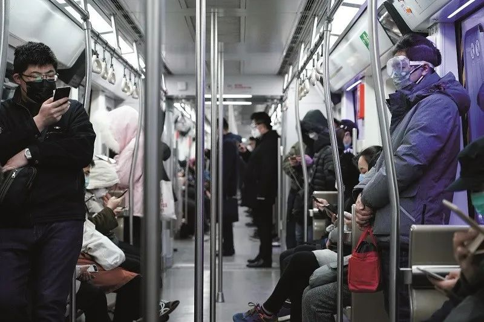
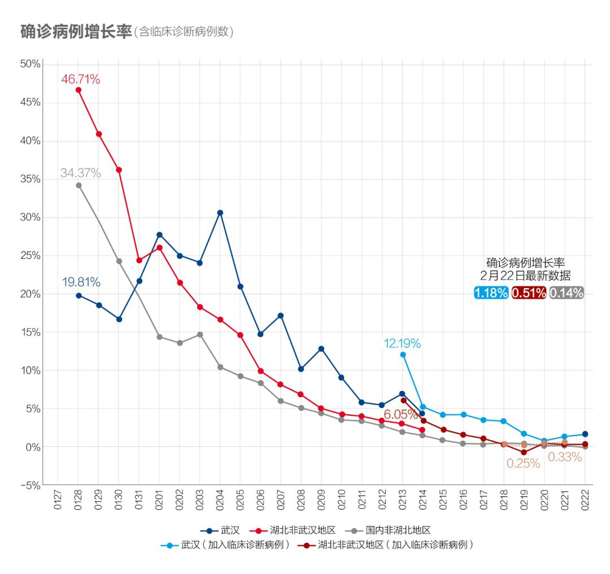
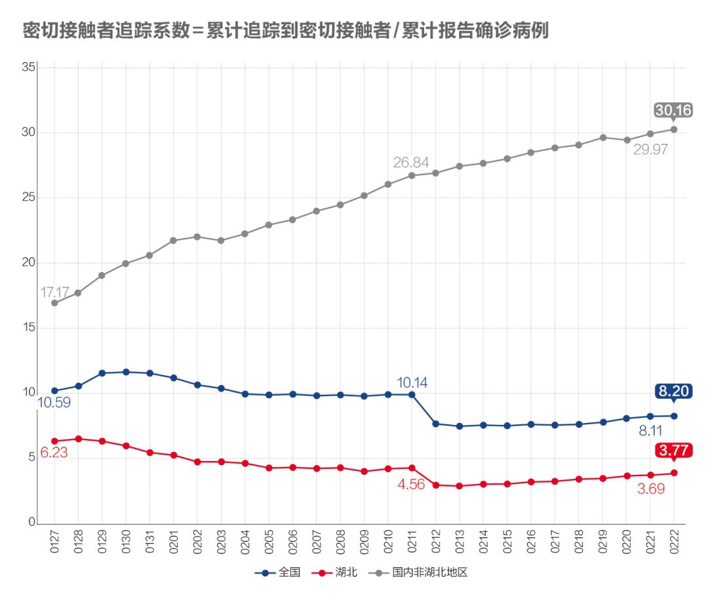
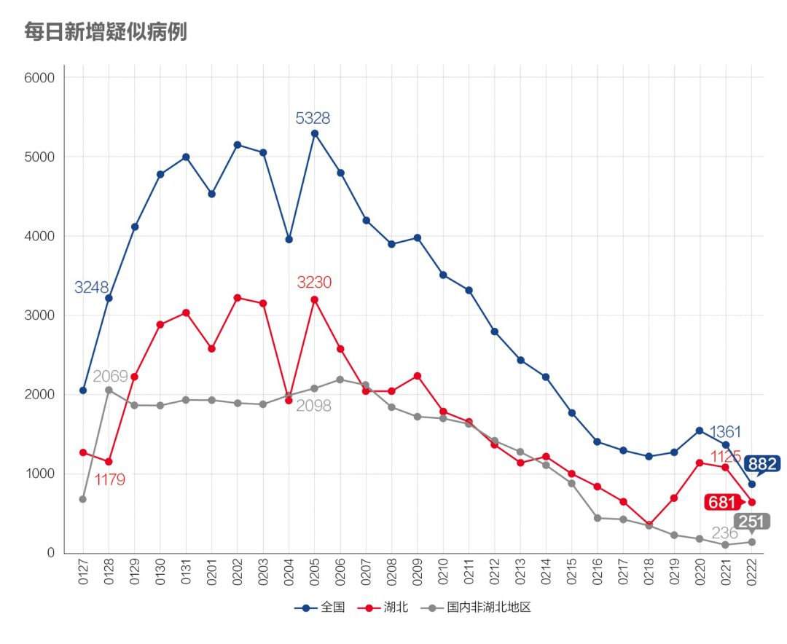
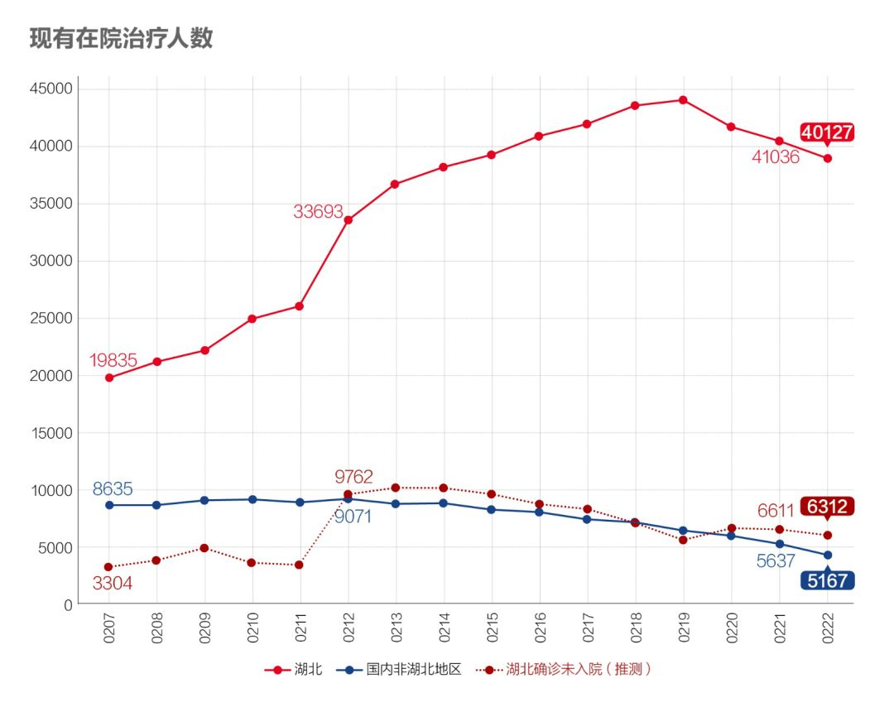
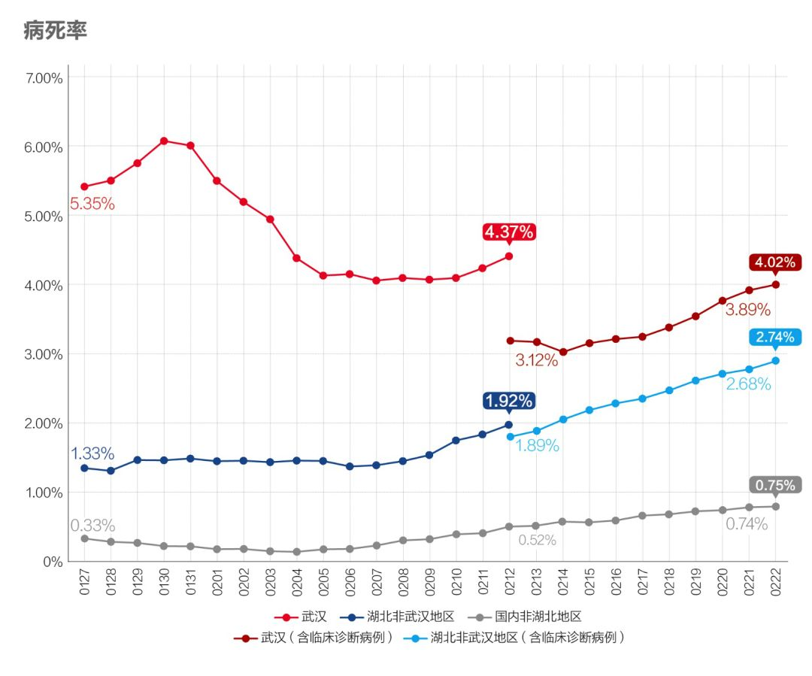
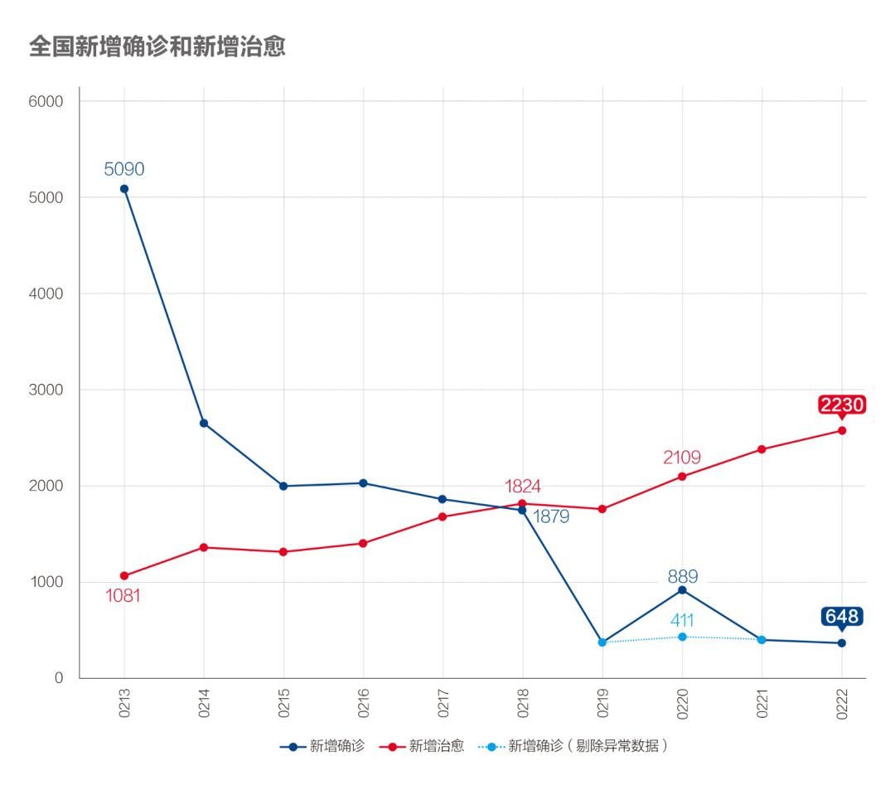

数说疫情0222：武汉艰难拉锯两周后反守为攻，其他地区继续向好
原文链接 备份链接 为什么我们说武汉战局出现了反守为攻的转机？主要有3点 文 |《财经》数据研究员 徐进 图 |《财经》视觉中心 编辑 | 谢丽容 一、 累计确诊病例：趋势现“顶” 截至2月21日24:00，全国累计报告确诊新冠肺炎病 …

全国21省份22日零新增，抗疫战果继续巩固。此前我们预测湖北疑似病例存量，在拉网排查取得成功后会于22日开始下降，最新数据确实印证了该预测

文 |《财经》数据研究员 徐进
图 |《财经》视觉中心
编辑 | 谢丽容
一、 累计确诊病例：全国新冠肺炎病例总数有望控制在8万
截至2月22日24:00，全国累计报告确诊新冠肺炎病例76936例。以下为分区趋势图。

图1.1
红线和黑线显示我们在和“死神”赛跑！

图1.2
武汉以外地区的趋势线平顶已经清晰，目前大体可以看出：国内非湖北地区累计病例将停留在13000例左右，湖北非武汉地区将在19000例左右，武汉将在48000例左右。最主要的变数是，这个新冠肺炎究竟是像SARS一样不留长尾，还是会如指数函数所示的拖出一条长长的尾巴（最近有专家有此担心）？亦或介于两者之间？要待非湖北地区数据先行确认。
二、 新增病例：北京迎来零新增！非湖北地区全面收官

图2
国内非湖北地区新增病例进一步降至18例，平均每省市0.6例。零新增省市21个，北京迎来了疫情爆发后的首个“零新增”。

图3
今日湖北统计口径调整，在原18市州外新列监狱一项。这个数据是扩大统计范围还是将原有统计数据重新归类尚未明确，其对数据趋势影响有待观察。我们推测是因为进一步强化防疫属地管理原则而刚刚被纳入统计。但无论如何数据公布本身都是特别值得称赞的！疫情当头，群众更希望看到一个坚定自信的政府。从昨天情况看监狱的新增病例数紧随武汉，超过湖北其他市州。疫情在监狱爆发是个不幸，相信局面正得到控制。总体不改变对湖北向好趋势判断。

图4
武汉的新增病例有所回升。结合湖北新增疑似、疑似排除和疑似隔离等数据，分析认为这主要是受拉网筛查和加快检测速度推进“日结清零”等措施影响而非疫情反弹。不改变对武汉战局已发生积极逆转的判断。
三、 确诊病例增长率：非湖北地区增速“趋零”，湖北及武汉略回升，但不改趋势判断

图5
国内非湖北地区增长率降至0.18%，统计意义上已经“趋零”。湖北及武汉略有回升，有拉网排查检测加快推进“日结清零”因素，但也不排除·数据调整因素。均不改变原向好趋势判断。
四、 密切接触者追踪：湖北及武汉的追踪力度强势提升

图6
湖北这个指标继续爬升！近三日的滑动平均数更显示其升势强劲：追踪比已进一步提高到20左右。据报2月21日晚湖北省委书记应勇针对武汉主战场部署工作时明确指出“要进一步加强流调，强化流调队伍建设和大数据分析，完善（流调-隔离-筛查-治疗-流调的）工作闭环”，“在具备条件情况下，实现武汉市全部密切接触人员集中隔离”。此举将彻底阻隔传染，令人鼓舞。

图7
湖北和非湖北地区都在继续下降，意味着可以释放更多医疗资源、社会人力资源和隔离空间投入到新的密切接触者追踪隔离上。
五、 疑似病例：增量下降，湖北存量继拉网筛查行动后也再现下降

图8
湖北（含武汉）新增疑似病例继续向下，确认武汉“五个百分之百”功成。

图9
此前我们预测湖北在拉网排查取得成功后会于今日开始下降，今日果然如此！印证“拉网筛查”战果。
六、 在院治疗人数：湖北非湖北都在下降。“湖北确诊未入院”人数亦有下降

图10
在院治疗人数存量下降，继续释放病床床位。我们推测出的“湖北确诊未入院”人数亦有下降。
七、 病死率、治愈率

图11
病死率已连续提高两周以上，估计还会持续。这里有病死发生时间与新确诊增加不同步的因素（非湖北地区），也有救治能力和医疗资源因素（武汉）。

图12
治愈率以更快速度上升。让我们和死神赛跑！
八、新增出院和新增确诊

图13.1新出院人数与新确诊人数

图13.2
核心医疗资源继续得到释放。
小结：湖北及武汉向好趋势不改。全国非湖北地区疫情蔓延已得到遏制。新增病例统计意义上已“趋零”。统计上未见疫情卷土重来证据，也未发现意味着疫情死灰复燃的个案。继续呼吁湖北以外地区在防控意识不松懈的前提下，加快有序复工复产。
● 数说疫情
数说疫情0221：武汉疫情出现重要转折，战局由防守转为全面进攻
数说疫情0220：非湖北地区新增病例趋零，现阶段应大胆加快返工复产
数说疫情0216：湖北化解堰塞湖战局扭转，非湖北地区新增病例5日内清零
数说疫情0215：非湖北地区新增病例5日后有望清零，湖北进入总攻阶段

▲点击图片查看更多疫情报道
责编 | 蒋丽 lijiang@caijing.com.cn
本文为《财经》杂志原创文章，未经授权不得转载或建立镜像。如需转载，请在文末留言申请并获取授权。
原文链接 备份链接 为什么我们说武汉战局出现了反守为攻的转机？主要有3点 文 |《财经》数据研究员 徐进 图 |《财经》视觉中心 编辑 | 谢丽容 一、 累计确诊病例：趋势现“顶” 截至2月21日24:00，全国累计报告确诊新冠肺炎病 …
原文链接 备份链接 _ 武汉新增确诊病例和新增治愈病例今日跨过“黄金交叉”点，从此全国包括武汉在内将逐日加大释放以医院病床床位为核心的医疗资源。但也应注意到2月20日数据出现两个异常：一是非湖北地区新增病例出现巨大反弹；二是国家卫健委与湖 …
原文链接 备份链接 全国武汉以外地区全面向好，期待武汉落实五个“百分之百”终获成功！ 文 |《财经》数据研究员 徐进 图 |《财经》视觉中心 编辑 | 谢丽容 一、 累计确诊病例 截至2月18日24:00，全国累计报告确诊新冠肺炎病 …
原文链接 备份链接 今天起我们将不再提“归零”，以期警钟长鸣 2020年1月17日，医护人员将患者送至武汉金银潭医院。摄影/无畏 文 |《财经》数据研究员 徐进 图 |《财经》视觉中心 编辑 | 谢丽容 一、 …
原文链接 备份链接 我们为什么预测本月20日前每日新增病例归零？五个依据 2020年2月6日，武汉市蔡甸区人民医院的隔离病房。摄影/陈卓 文 |《财经》数据研究员 徐进 图 |《财经》视觉中心 编辑 | 谢丽容 截至2月16 …